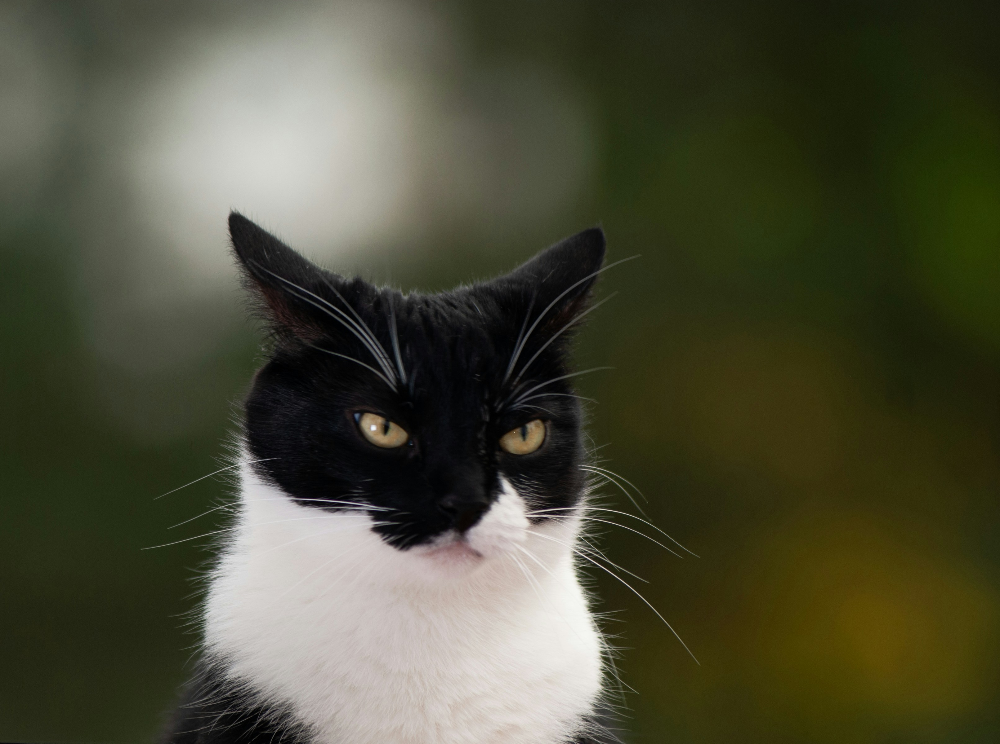
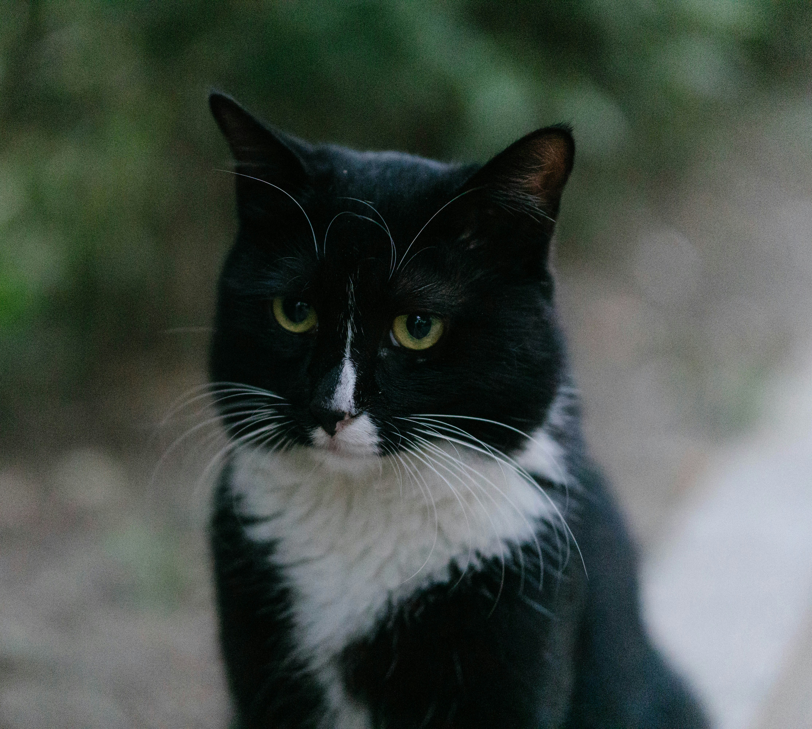
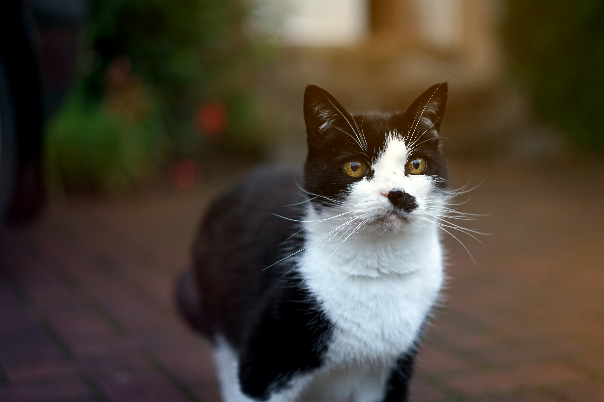

These are the most felix cats!

Katt (Felis catus), även känd som tamkatt, är ett relativt litet, smygjagande rovdjur i familjen kattdjur och ett vanligt sällskapsdjur i stora delar av världen. Falbkatten (Felis silvestris lybica), en underart till vildkatten (Felis silvestris), blev tidigt domesticerad av människan som nyttodjur för att hålla efter skadedjur eller för sällskap, både på landet och i stadsmiljö.

Tidigare ansågs egyptierna vara den kultur som längst har haft katten som tamdjur, eftersom katten hölls som heligt djur där. Den äldsta kända kattgraven återfanns emellertid på Cypern år 2004, och kan vara 9 500 år gammal, vilket är äldre än den neolitiska kultur som uppstod i Egypten för 8 000 år sedan

Kattens öron sänder också ut signaler till andra djur och till människor. Tätt bakåtstrukna öron tyder på stark aggression eller rädsla, särskilt om katten fräser. Uppåtriktade tyder på uppmärksamhet åt det håll de är riktade.